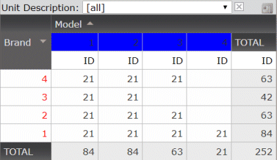

The Query Viewer User Control can be populated with a Query object or Data Provider by means of the Object property. Both objects are targeted to solve different scenarios. The purpose of this article is to precisely detail these differences in relation to the Query Viewer User Control so that you can choose the right one for your use case. Generation StrategyA query object is ultimately mapped to a Select SQL statement, and therefore its output is a flat structure of columns. It is mandatory that the sentence is resolved to a same extended table for all its attributes. A sample query object could be the following one
SalesByDateQuery
{
InvoiceDate
Sum(InvoiceTotal)
}
The SQL statement is similar to the following one SELECT ..... FROM ([Invoice] T1 LEFT JOIN ( SELECT [InvoiceId], SUM([InvoiceAmount]) AS InvoiceTotalNoTaxes FROM [InvoiceLines] GROUP BY [InvoiceId] ) T2 ON T2.[InvoiceId] = T1.[InvoiceId]) ORDER BY T1.[InvoiceDate] A data provider is mapped to a program that is associated to the knowledge base environment (generator) and it must be exposed as a Web Service (when using C# generator) so it can be called by the Query Viewer User Control. In this case the result is a hierarchical structure represented by a SDT. Using the same sample an equivalent data provider could be:
SalesByDate From Invoice Unique InvoiceDate
{
SaleDate = InvoiceDate
SaleTotal = sum(InvoiceTotal)
}
FocusThe approach for constructing a Query object is 'Input then Output'; the developer is in charge of detailing the associated attributes to be used, aggregations and filters; then decide the output. On the other hand, when working with a Data Provider the focus is 'Output then Input'; where you first define the SDT with the required Output and then define how the DP is loaded. VisualizationThe query object has already integrated the visualization layer within the object; so you can design it as you want it (Card, Pivot Table, Table and Chart) and define the look & feel for all the query elements. When using a Data Provider, all the visualization must be done in a programmatic way directly on the Query Viewer object. Default assumptions made when rendering the object are:
Sample caseSuppose we have the following Data Provider to load Unit information
UnitCollection
{
&ModelsSDT = AllCarModelColor()
Unit Input &Model in &ModelsSDT
{
UnitDescription = &Model.CarBrandName.Trim() + ' ' + &Model.CarModelName.Trim() + ' ' + &Model.ColorName.Trim()
CarBrandId = &Model.CarBrandId
CarModelId = &Model.CarModelId
ColorId = &Model.ColorId
}
}
To be used from a QueryViewer control and to get the desired layout  code the following:
&Axis = New()
&Axis.Name = "UnitDescription"
&Axis.Type = QueryViewerAxisType.Page
&Axes.Add(&Axis)
&Axis = New()
&Axis.Name = "CarBrandId"
&Axis.Title = "Brand"
&Axis.Type = QueryViewerAxisType.Row // Send attribute to the Pages area
&Axis.AxisOrder.Type = QueryViewerAxisOrderType.Descending // Set descending order for the attribute
&Axis.Format.Subtotals = QueryViewerSubtotals.Yes
&Axis.Format.Style = "color:#FF0000" // Set some format (color=red)
&Axes.Add(&Axis)
&Axis = New()
&Axis.Name = "CarModelId"
&Axis.Title = "Model"
&Axis.Type = QueryViewerAxisType.Column // Send attribute to the Columns area
&Axis.AxisOrder.Type = QueryViewerAxisOrderType.Ascending // Set ascending order for the attribute
&Axis.Format.Subtotals = QueryViewerSubtotals.No // No subtotals
&Axis.Format.Style = "backgroundColor:blue" // Set some format (backgroun color=blue)
&Axes.Add(&Axis)
&Axis = New()
&Axis.Name = "ColorId"
&Axis.Title = "ID"
&Axis.Type = QueryViewerAxisType.Data // Send attribute to the Data area
&Axes.Add(&Axis)
In short, you need to specify for each axis how it will be rendered. ConsiderationsWhen using a Data Provider as a source for your Query Viewer control, consider the following; the associated SDT cannot include:
|
| Backlinks |
| When to use Query and when to use Data Provider with the QueryViewer control |